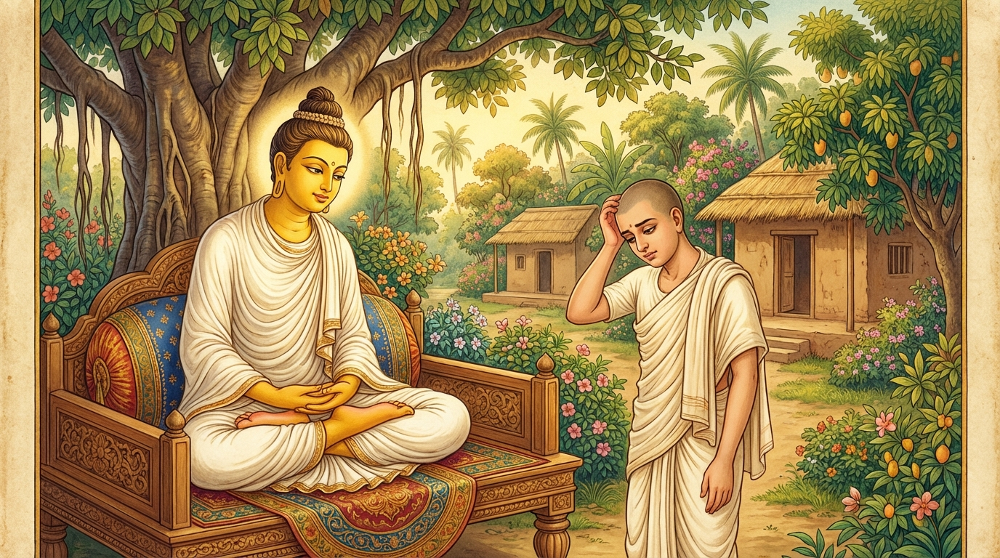

5. අනභිරති ජාතකය (185)
“යථොදකෙ ආවිලෙ අප්පසන්නෙ” යන මෙම දේශනාව බුදුරජාණන් වහන්සේ ජේතවන මහා විහාරයෙහි වැඩවාසය කරන සමයෙහි එක්තරා බමුණු කුමාරයෙකු අරබයා දේශනා කළ සේක. සැවැත් නුවර එක්තරා බමුණු කුමාරයෙක් ත්රිවේදයෙහි පරතෙරට ගොස් බොහෝ ක්ෂත්රිය කුමාරවරුන්ට ද බමුණු කුමාරවරුන්ට ද මන්ත්ර ඉගැන්වීය. ඔහු පසුකලෙක ගිහි ජීවිතය අරඹා,
- වස්ත්රාභරණ ද,
- දැසි දස්සන් ද,
- කෙත් වතු ද,
- ගව මහිෂාදීන් ද,
- අඹු දරුවන් ද,
ආදීන්ගේ ප්රයෝජනය සිතමින් රාග, ද්වේෂ, මෝහයන්ට වසඟ වී කැළඹුණු සිත් ඇත්තේ විය. මන්ත්ර පිළිවෙළින් කියන්නට නොහැකි විය. අතරින් පතර මන්ත්රවල අරුත් නොවැටහේ. ඔහු එක් දිනක් බොහෝ සුවඳ මල් ආදිය රැගෙන ජේතවනාරාමයට ගොස් බුදුරජාණන් වහන්සේට පූජා කොට වැඳ එකත්පසෙක හිඳ ගත්තේය. බුදුරජාණන් වහන්සේ ඔහු සමඟ පිළිසඳර පවත්වා, “මානවකය! කෙසේ ද? මන්ත්ර උගන්වන්නෙහි ද? ඔබට මන්ත්ර ප්රගුණ දැ?” යි විමසූහ. “ස්වාමීනි! පෙර සිට මන්ත්ර ප්රගුණ යි. ගිහිගෙයි කටයුතුවලට අවධානය යොමු වූ කාලයේ සිට මාගේ සිත කැළඹුණු ස්වභාවයෙන් යුක්ත ය. ඒ නිසා මට මන්ත්ර ප්රගුණ නොවෙයි. මතක නැත.” ඉක්බිති ඔහුට බුදුරජාණන් වහන්සේ “මානවකය! දැන් පමණක් නො වෙයි, පෙරත් සිත නොකැළඹී සිටි කාලයෙහි ඔබ මන්ත්ර ප්රගුණ විය. රාගාදියෙන් සිත කැළඹුණු කාලයෙහි නුඹේ මන්ත්ර සිහිපත් කර ගැනීමට නොහැකි වූයේ යැ” යි වදාරා, ඔහු විසින් අයදින ලද්දාහු අතීත කථාව ගෙනහැර දැක්වූ සේක.
යටගිය දවස බරණැස් නුවර බ්රහ්මදත්ත රජු රජ කරන කල්හි බෝසතාණන් වහන්සේ බමුණු මහාසාර කුලයෙහි ඉපදී වැඩිවියට පත් වූවාහු, තක්සලා නුවරින් මන්ත්ර ඉගෙන ගෙන දිසාපාමොක් ගුරුතුමා වී බරණැස් නුවර බොහෝ ක්ෂත්රිය බ්රාහ්මණ කුමාරවරුන්ට මන්ත්ර ඉගැන්වූහ. ඔහු සමීපයෙහි එක් බමුණු මානවකයෙක් ත්රිවේදය ප්රගුණ කළේ ය. එක පදයක වත් සැකයක් නොමැති ව කීමෙහි දෙවන ගුරුවරයා වී මන්ත්ර ඉගැන්වීය. හෙතෙම පසු කලෙක ගෘහ වාසයට පත් ව, ගෘහ සැප පිළිබඳ සිතිවිල්ලෙන් යුතුව කැළඹුණු සිත් ඇති ව මන්ත්ර කියන්නට නොහැකි විය. ඉක්බිති ගුරුවරයා තමන් සමීපයට පැමිණි ඔහුගෙන් “මානවකය! කෙසේ ද? මන්ත්ර ප්රගුණ දැ?” යි විචාරා, “ගෘහ වාසය හා සම්බන්ධ වූ කාලයේ පටන් මගේ සිත කැළඹුණේ ය, මන්ත්ර කියන්නට නොහැක්කෙමි” යි කී කල්හි, “දරුව! සිත කැළඹුණු කල ප්රගුණ කළ මන්ත්ර වුව ද නොවැටහේ. නොකැළඹුණු කල්හි වනාහි නොවැටහීමක් නම් නැතැ” යි පවසා මෙම ගාථාවන් වදාළහ.

“යම් සේ මඩ මිශ්ර වූ, නොපෑදුණු ජලයෙහි රන්වන් බෙල්ලන් ද, වට බෙල්ලන් ද, ගල්කැට, වැලි හා මත්ස්යයන් නො දකියි ද, එසේ ම සිත කැළඹුණු කල්හි තමන්ගේ යහපත හෝ අනුන්ගේ යහපත නො දකියි.”
“යම් සේ නොකැළඹුණු, පෑදුණු ජලයෙහි රන්වන් බෙල්ලන් ද, වට බෙල්ලන් ද, ගල්කැට, වැලි හා මාළුන් ද ඔහු දකියි ද, එසේ ම සිත රාගාදී කෙලෙස්වලින් නොකැළඹුණු කල ඔහු තම යහපතත් අනුන්ගේ යහපතත් දකියි.”
එහි ආවිලෙ යනු කැළඹුණු මඩ ඇති ය. අප්පසන්නෙ යනු ඒ කැළඹීම නිසා ම අප්රසන්න වූ හෙවත් නොපෑදුණු ය. සිප්පිකසම්බුකඤ්ච යනු රන්වන් බෙල්ලන් ද, වට බෙල්ලන් ද සහ මුතු බෙල්ලන් ද ය. මච්ඡගුම්බං යනු මාළු සමූහයා ය. එවං ආවිලම්හි යනු මෙසේ ම රාගාදී කෙළෙස්වලින් කැළඹුණු සිතෙහි ය. අත්තදත්ථං පරත්ථං යනු තමාගේ යහපතත් අනුන්ගේ යහපතත් යන දෙක ම නො දක්නේ ය යන අර්ථ යි. සො පස්සති යනු එසේ ම සිත නොකැළඹුණු කල ඒ පුරුෂයා තම යහපතත් අන් යහපතත් දකියි.
බුදුරජාණන් වහන්සේ මෙම ධර්ම දේශනාව ගෙනහැර දක්වා, චතුරාර්ය සත්යයන් ප්රකාශ කොට ජාතක කථාව නිමවා වදාළ සේක. චතුරාර්ය සත්ය දේශනාව අවසානයෙහි බමුණු කුමරා සෝවාන් ඵලයෙහි පිහිටියේ ය. “එකල මානවකයා දැන් මේ මානවකයා ම විය. ගුරුවරයා වනාහි මම ම වූවෙමි” යි වදාළ සේක.
පස්වන වූ අනභිරති ජාතක වර්ණනාව යි.